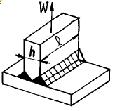
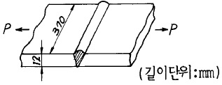
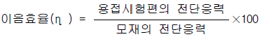
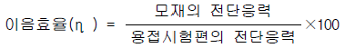
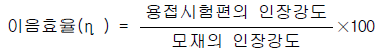
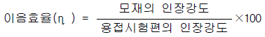
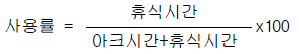
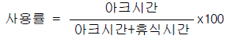
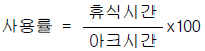
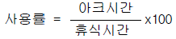

용접기능장 (2004-07-18 기출문제)
1과목: 임의구분
1. 다음 중 압접(pressure welding)이 아닌 것은?
- 플라스마 용접
- 고주파 용접
- 초음파 용접
- 마찰 용접
(정답률: 90%)

2. 용접이음의 장점이 아닌 것은?
- 리벳에 비하여 구멍뚫기 작업 등의 공정이 절약된다.
- 이음 효율이 리벳보다 높다.
- 용접부의 품질검사가 쉽다.
- 기밀성이 보존된다.
(정답률: 87%)
3. 용접기의 1차전압 200V, 1차전류 200A, 2차 무부하 전압 90V, 용접전류 400A일 때의 1차 피상 입력은 몇 kVA가 되는가?
- 36
- 18
- 80
- 40
(정답률: 44%)
4. 교류용접기중에서 원격 조정을 하는 데 가장 좋은 용접기는?
- 코일형
- 가동 철심형
- 탭 전환형
- 가포화 리액터형
(정답률: 74%)
5. 용접기의 설치장소로 적합하지 않은 곳은?
- 휘발성 기름이나 가스가 없는 장소
- 폭발성 가스가 존재하지 않는 장소
- 습도가 높은 장소
- 먼지가 적은 장소
(정답률: 92%)
6. 산소가 아세틸렌 가스 호스 쪽으로 흘러서 발생기가 폭발을 일으키는 사고를 무엇이라 하는가?
- 폭발사고
- 인화사고
- 호스사고
- 역류사고
(정답률: 85%)
7. 산소 용기에 철인으로 표시된 것 중 틀린 것은?
- 최고충전압력
- 제조번호
- 용기 중량
- 가스 충전일자
(정답률: 70%)
8. 아세틸렌 과잉불꽃이라고도 하며, 불꽃의 길이가 아세틸렌의 양에 따라 길어지거나 짧아지는 것은?
- 순화불꽃
- 탄화불꽃
- 중성불꽃
- 산화불꽃
(정답률: 85%)
9. 용접차광렌즈(Welding lens)의 차광능력의 등급을 차광도 번호라 한다. 100A 이상 300A 미만의 아크 용접 및 절단 등에 쓰이는 차광도 번호는 얼마인가?
- 4 - 5
- 7 - 8
- 10 - 12
- 14 - 15
(정답률: 79%)
10. 스카핑 작업에 대한 설명이다. 옳지 않은 것은?
- 스카핑 작업에서는 강재표면의 탈탄층은 제거하지 못한다.
- 스카핑 작업은 강재표면의 흠을 제거한다.
- 가우징 작업보다 얇게 표면을 깎는다.
- 가우징 보다 넓게 표면을 깎는다.
(정답률: 72%)
11. 가스절단 결과의 판정은 다음 사항을 중요시 하는데 그 중 틀린 사항은?
- 드래그가 일정할 것
- 절단면의 윗 모서리가 예리할 것
- 슬래그의 이탈성이 나쁠 것
- 절단면이 깨끗하며 드래그 흠이 없을 것
(정답률: 83%)
12. 강판을 가스절단할 때, 절단 변형의 방지대책이 아닌 것은?
- 가열법
- 구속법
- 수냉각법
- 역변형법
(정답률: 58%)
13. 서브머지드 용접에서 다른 조건이 일정하고 용접봉 직경이 증가하면 용접부에 어떤 영향을 가장 많이 미치는 가?
- 용입증가
- 비드폭 증가
- 용입감소
- 비드높이 증가
(정답률: 50%)
14. 서브머지드(submerged) 아크용접법의 단점에 해당되지않는 것은?
- 용접선이 짧고 복잡한 형상의 경우에는 용접기의 조작이 번거롭다.
- 설비비가 고가(高價)이다.
- 용제는 흡습이 쉽기 때문에 건조나 취급을 잘 해야한다.
- 용제의 단열 작용으로 용입을 크게 할 수 없다.
(정답률: 70%)
15. 일반적으로 곧고 긴 용접선의 용접에 적합하며 이음면 위에 뿌려놓은 분말 플락스 속에 용가재(전극)를 찔러 넣은 상태에서 용접하는 용극식의 자동용접법은?
- 불활성 가스아크용접
- 전자빔용접
- 플라즈마용접
- 서브머지드아크용접
(정답률: 94%)
16. 불활성 가스 아크용접할 때 가속된 이온이 모재에 충돌하여 모재표면의 산화물을 파괴한다. 이러한 현상을 무엇이라 하는가?
- 핀치효과
- 자기불림효과
- 중력가속효과
- 청정효과
(정답률: 79%)
17. 교류를 사용해서 TIG용접 할 때의 특성으로 틀린 것은?
- 전극의 직경은 비교적 작다.
- 텅스텐 전극의 정류작용에 의한 교류의 직류 변환으로 아크가 안정하게 되며, 전류밀도가 MIG용접보다 높다.
- 아크가 끊어지기 쉽다.
- 비이드의 폭이 넓고,적당한 깊이의 용입이 얻어진다.
(정답률: 59%)
18. TIG용접시 용입이 깊고 비드폭을 좁게 하려면 전류전원의 극성은 어느 것을 선택해야 하는가?
- 직류 정극성
- 교류
- 직류 역극성
- 고주파수 극성
(정답률: 57%)
19. 이산화탄산가스(CO2 gas) 아크용접에서 복합 와이어 (combined wire)중 와이어가 노즐(nozzle)을 나온 부분에, 자성 플럭스(magnetic flux)가 부착하는 형태의 용접법은?
- 유니온 아크법(union arc process)
- 아코스 아크법(arcos arc process)
- 휴스 아크 CO2법(fus arc CO2 process)
- NCG법
(정답률: 64%)
20. 탄산가스 아크용접(CO2 Gas Arc Welding)에서 전극와이어[Wire]의 송급은 다음 중 어느 방식에 따르는가?
- 자기제어 특성을 이용하여 정속 송급한다.
- 전류[A]의 크기에 따라 달라진다.
- 아크길이 제어 특성과 관계없다.
- 용접속도에 따라 달라진다.
(정답률: 68%)
2과목: 임의구분
21. 아세틸렌 가스와 접촉하여도 폭발의 위험성이 없는 재료는?
- 수은(Hg)
- 은(Ag)
- 동(Cu)
- 크롬(Cr)
(정답률: 83%)
22. 용접중에 전격의 위험을 방지하기 위하여 사용되는 전격 방지기에 관한 설명이 틀리는 것은?
- 작업을 쉬는중에 용접기의 1차 무부하 전압을 25V로 유지한다.
- 용접봉을 접촉하는 순간 전자개폐기가 닫힌다.
- 용접봉을 접촉하는 순간 2차 무부하전압이 70 - 80V로 되어 교류아크가 발생된다.
- 용접기에 전격방지기를 설치한다.
(정답률: 66%)
23. 티그 용접에 사용되는 텅스텐 용접봉들중에서 박판,정밀 항공기 부품 같은 것들의 용접에 적합한 용접봉은?
- 순텅스텐(EWP)
- 4% 토륨 텅스텐(EWTh - 4)
- 2% 토륨 텅스텐(EWTh - 2)
- 지르코늄 텅스텐(EWZr)
(정답률: 55%)
24. 인장강도와 내식성이 좋고, 고온에서 크리이프 (Creep) 한계가 높아, 항공기 부품 및 화학용기분야에 사용되는 합금은?
- 망간합금
- 텅그스텐합금
- 구리합금
- 티타늄합금
(정답률: 80%)
25. 유황은 철과 화합하여 황화철(FeS)을 만들어 열간가공성을 해치며 적열취성을 일으킨다. 이와 같은 단점을 제거하기 위해서는 철보다 더욱 쉽게 화합하는 원소를 적당량 이상 첨가시켜 불용성의 황화물로 만들어 제거하면 된다. 이때 일반적으로 많이 사용되는 원소는 어떤 것인가?
- Mn(망간)
- Cu(구리)
- Ni(니켈)
- Si(규소)
(정답률: 64%)
26. 다음 금속중에서 용융점이 가장 높은 것은?
- Ir
- W
- Hg
- Ne
(정답률: 77%)
27. 담금조직에 있어서 마텐자이트(martensite)의 조직은?
- 그물 모양으로 펼친 조직
- 삼(麻)잎 모양으로 한 조직
- 침상 모양을 한 조직
- 만곡상의 흑연조직
(정답률: 47%)
28. 용접설계상의 유의점이다. 틀린 것은?
- 작업자세는 아래보기 자세가 좋으므로 중요한 이음에서는 아래보기 자세로 한다.
- 잔류응력과 열응력이 한곳에 집중하도록 하고 모우멘트가 작용하지 않게 한다.
- 두께가 다른 2장의 강판을 용접할때 중간판을 쓰든지 혹은 두꺼운 강판을 테이퍼지게 하여 붙인다.
- 모재의 용접부를 용접하기 쉬운 모양으로 한다.
(정답률: 76%)
29. 그림과 같이 양쪽 필렛용접을 하였다. 용접부에 생기는 응력을 나타낸 식은 어느 것인가?

- σ = W/(h + ℓ )
- σ = W/hℓ
- σ = W/ℓ
- σ = W/h
(정답률: 82%)
30. 다음 그림과 같이 맞대기 용접하였을 경우 인장하중 P = 4800[㎏f]에 대하여 용접부에 발생하는 인장응력은 몇 [kgf/㎜2]인가?

- 1.08
- 10.81
- 100.81
- 1000.81
(정답률: 53%)
31. 맞대기 용접의 강도계산은 어느 부분을 기준으로 정하여 행하는가?
- 다리길이
- 목두께
- 루트간격
- 홈깊이
(정답률: 66%)
32. 전단 하중을 받을 때 용접이음효율(η[%]) 공식으로 맞는 것은?




(정답률: 24%)
33. 지그(JIG)의 사용목적에 부합되지 않는 것은?
- 제품의 정밀도가 향상되고 대량생산에서 호환성 있는 제품이 만들어진다.
- 가공 불량이 감소되고 미숙련공의 작업을 용이하게 한다.
- 제작상의 공정수가 감소하고 생산능률을 향상시킨다.
- 비교적 본 기계장비에 비해 소형 경량이며,큰 출력을 발생시키는데 사용된다.
(정답률: 87%)
34. 다음은 용접 순서에 대한 설명이다. 잘못된 것은 어느 것인가?
- 같은 평면안에 많은 이음이 있을 때에는 수축은 가능한 한 자유단으로 보낸다.
- 물품의 중심에 대하여 항상 대칭으로 용접을 진행시킨다.
- 수축이 작은 이음을 가능한한 먼저 용접하고 수축이 큰 이음을 뒤에 용접한다.
- 용접물의 중립축에 대하여 용접으로 인한 수축력 모우먼트의 합이 "0"이 되도록 한다.
(정답률: 86%)
35. 용접의 기공(氣孔)방지 대책에 대해 옳게 서술한 것은?
- 적정 아크 길이를 유지하지 않으면 안 된다.
- 개선면에 다소의 녹이 붙어 있어도 용접전류를 크게 해서 가스를 부상시킨다.
- 아크 길이를 길게 해서 용접하면 가스는 부상이 쉽게 되어 좋다.
- 용재에 있는 다소의 습기는 용접입열을 크게 해서 용접하면 된다.
(정답률: 76%)
36. 용접부 부근의 모재가 용접할때의 열에 의하여 급열 급랭 되어 변질된 부분을 무엇이라 하는가?
- 용착금속부
- 열영향부
- 원질부
- 백비드부
(정답률: 88%)
37. 용접시 잔류응력을 경감시키는 시공법이 아닌 것은?
- 예열을 한다.
- 용착금속을 적게한다.
- 비석법의 용착을 한다.
- 용접부의 수축을 억제한다.
(정답률: 59%)
38. 다음 금속중 냉각속도가 가장 빠른 금속은 어느 것인가?
- 연강
- 스테인레스강
- 알루미늄
- 구리
(정답률: 56%)
39. 경화되는 강을 용접할 때, 용접열에 의한 경화를 방지하는데 가장 중요한 것은?
- 예열온도
- 경화속도
- 최고온도
- 최저온도
(정답률: 80%)
40. 아크 절단에 관하여 틀린 설명은?
- 아크 열로 금속을 국부적으로 용해하여 절단한다.
- 주철, 스텐레스강은 절단이 가능하다.
- 절단면은 가스절단면보다 곱다.
- 금속아크에서는 피복봉을 사용하고 직류정극성 또는 교류를 사용한다.
(정답률: 64%)
3과목: 임의구분
41. 전 용접선을 RT(방사선 투과시험)를 실시하여 이상이 발견되지 않은 용접이음의 효율은?
- 80%
- 90%
- 100%
- 60%
(정답률: 68%)
42. 피복아크 용접에서 사용률을 바르게 나타낸 것은?




(정답률: 72%)
43. 테르밋 용접(thermit welding)에서 테르밋제(thermit mixture)의 주성분은?
- 과산화바륨과 마그네슘
- 알루미늄 분말과 산화철 분말
- 아연과 철의 분말
- 과산화바륨과 산화철 분말
(정답률: 90%)
44. 납땜의 용제에서 구비조건이 아닌 것은?
- 전기저항 납땜에 사용되는 것은 부도체이어야 한다.
- 모재나 납땜에 대한 부식작용이 최소한이어야 한다.
- 땜납의 표면장력을 맞추어서 모재와 친화도를 높여야 한다.
- 인체에 해가 없어야 한다.
(정답률: 80%)
45. 구상 흑연 주철은 조직에 의한 분류중에 시멘타이트형이 있다. 시멘타이트 조직이 발생하는 원인 중 옳지 않는 것은?
- 마그네슘의 첨가량이 많을 때
- 냉각 속도가 빠를 때
- 가열한후 노중 냉각을 시킬 때
- 탄소 및 특히 규소가 적을 때
(정답률: 40%)
46. 알미늄에 규소가 10~14%함유된 것으로 알미늄 합금에서 개량처리를 하여 기계적 성질을 개선하는 합금은?
- 실루민
- 듀랄루민
- 하이드로날리움
- Y-합금
(정답률: 53%)
47. 78-80% Ni, 12-14% Cr의 합금으로 내식성과 내열성이 뛰어나서 전열기의 부품, 열전쌍의 보호관, 진공관의 필라멘트 등에 사용되는 니켈합금은?
- 알루멘(alumel)
- 코넬(conel)
- 인코넬(inconel)
- 니크롬(nichrome)
(정답률: 71%)
48. 값이 저렴한 구조용 특수강으로서 조선, 건축, 교량 등에 사용하기 위하여 0.8-1.7%의 망간을 첨가한 저탄소 저망 간강은?
- 소프트필드강(softfield steel)
- 인바(invar)
- 코엘린바(coelinvar)
- 듀콜강(ducol steel)
(정답률: 57%)
49. 용접용 로봇을 동작형태로 분류할 때 속하지 않는 것은?
- 원통좌표로봇
- 극좌표로봇
- 다관절로봇
- 삼각좌표로봇
(정답률: 60%)
50. 비자성체에 적용할수 없는 비파괴 검사법은?
- 침투 탐상
- 자분 탐상
- 초음파 탐상
- 와류 탐상
(정답률: 70%)
51. 다음 중 파괴 시험법이 아닌 것은?
- 굽힘시험
- 음향시험
- 충격시험
- 피로시험
(정답률: 75%)
52. 용접을 진행하면서 용접부 부근을 냉각시켜 모재의 열영 향부의 범위를 축소시킴으로써 변형을 방지하는 방법으로 냉각법을 사용하는데, 냉각 방법이 아닌 것은?
- 수냉동판 사용법
- 살수법
- 피닝법
- 석면포 사용법
(정답률: 76%)
53. 심(seam) 용접의 통전방법에서 가장 많이 사용되며 통전과 중지를 규칙적으로 반복하는 것은?
- 단속통전법
- 연속통전법
- 맥동통전법
- 롤러통전법
(정답률: 48%)
54. 필릿용접의 루트부분에 생기는 저온 균열이며 모재의 열팽창수축에 의한 비틀림이 주요원인인 용접결함은?
- 크레이터 균열(crater crack)
- 힐 크랙(heel crack)
- 비드 및 균열(under bead crack)
- 설퍼 크랙(sulfur crack)
(정답률: 53%)
55. 미리 정해진 일정 단위중에 포함된 부적합(결점)수에 의거 공정을 관리할 때 사용하는 관리도는?
- p관리도
- nP관리도
- c관리도
- u관리도
(정답률: 41%)
56. 도수분포표에서 도수가 최대인 곳의 대표치를 말하는 것은?
- 중위수
- 비 대칭도
- 모우드(mode)
- 첨도
(정답률: 71%)
57. 로트수가 10 이고 준비작업시간이 20분이며 로트별 정미작업시간이 60분이라면 1로트당 작업시간은?
- 90분
- 62분
- 26분
- 13분
(정답률: 57%)
58. 더미활동(dummy activity)에 대한 설명중 가장 적합한 것은?
- 가장 긴 작업시간이 예상되는 공정을 말한다.
- 공정의 시작에서 그 단계에 이르는 공정별 소요시간들중 가장 큰 값이다.
- 실제활동은 아니며, 활동의 선행조건을 네트워크에 명확히 표현하기 위한 활동이다.
- 각 활동별 소요시간이 베타분포를 따른다고 가정할 때의 활동이다.
(정답률: 62%)
59. 단순지수평활법을 이용하여 금월의 수요를 예측할려고 한다면 이때 필요한 자료는 무엇인가?
- 일정기간의 평균값, 가중값, 지수평활계수
- 추세선, 최소자승법, 매개변수
- 전월의 예측치와 실제치, 지수평활계수
- 추세변동, 순환변동, 우연변동
(정답률: 53%)
60. 다음 중 검사항목에 의한 분류가 아닌 것은?
- 자주검사
- 수량검사
- 중량검사
- 성능검사
(정답률: 55%)